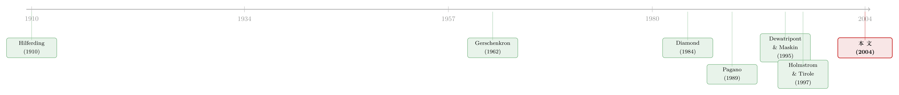

为什么英国人发债，德国人却找银行？——一道关于「要不要盯着你」的算术
本文读的是 Baliga & Polak (2004, Review of Financial Studies)：作者用一个最朴素的道德风险模型，把「德国靠银行、英国靠债券」这件被经济史学家争论了一个世纪的大事，归结成企业主心里的一道小算术——不被监督时的道德风险损失，到底有没有比请人监督的成本更贵。当信贷昂贵、资本稀缺时，天平偏向监督（德国式银行）；当信贷便宜、票据市场发达时，天平偏向不监督（英国式债券）。更妙的是后半篇：他们证明这两套体系一旦形成就会自我维持，而且「英美式」均衡只有在它有效率时才稳得住，「德国式」均衡却即使无效率也能赖着不走。
1 一个一百年没说清的问题
先讲一个让无数经济史学家睡不着觉的对照。
19 世纪末，英国和德国几乎同时站在工业化的舞台上，却走出了两条南辕北辙的融资路线。在英国，企业要外部融资，靠的多半是可流通的汇票 (bills of exchange) 和本票；银行宁可「不沾手」，先把借款人筛一遍、再去贴现票据，绝不愿意陷进对债务人日常经营的持续盯防。Sayers 那本经典的银行学教科书干脆把「流动性」奉为英国银行业的第一信条——好银行只做「能自我清偿」(self-liquidating) 的生意。
德国恰恰相反。所谓 Grossbanken（大银行）深度卷入工业，往董事会里塞自己的银行家、买下大块股权、对企业「保持持续的关注」。Gerschenkron (1962) 说德国工业银行与企业「建立了尽可能紧密的关系」；Hilferding (1910) 更是被这种「金融资本」的力量震撼到要去修正马克思。一组数字足以说明这股力量：到 1913 年，德国按实缴资本计最大的 25 家企业里，有 17 家是银行；早在 1903 年，柏林六大银行就掌控了 751 个董事会席位。
于是三个问题摆在那里。第一，为什么这两种融资方式会从两场工业革命里分别长出来？第二，为什么它们一百年都没有收敛、至今「德国体系」和「盎格鲁-撒克逊体系」还泾渭分明？第三，这种差异在福利上到底要不要紧？
经济史的文献给了无数定性的故事，却始终缺一把统一的尺子。Baliga 和 Polak 这篇文章的野心，就是用一个简单到能用一张图讲完的模型，把这三个问题一口气串起来。而所有的钥匙，都藏在一个词里：监督 (monitoring)。
2 核心：一道「要不要盯着你」的算术
两种融资的真正分野，不是「银行 vs 市场」，而是贷款人到底监不监督借款人。被监督的银行贷款（不可交易），与不被监督、却可以拿去市场上交易的债券——区别只在这一点。围绕这一点，全篇所有结论都立得起来。
2.1 模型设定
考虑一个企业主，手上有个需要外部融资的项目。项目成功则产出 q、按价格 P > 1 卖出；失败则一无所获。成功的概率 π 取决于企业主付出的「努力」，而努力是有私人成本的：对一个规模为 q 的项目，记单位私人成本为 ψ(π)，满足
$$\psi(0)=\psi'(0)=0,\qquad \psi''>0,\qquad \psi'''>0.$$
也就是说，努力（提高成功概率）越往上越费劲，边际成本递增。
一个规模 q 的项目需要 c(q) 单位资本，企业主自己没钱，只能借。这里出现两种借法，成本不同：
- 不被监督的贷款（可交易债券），贷方成本是
tc(q)，其中t > 1反映市场利率； - 被监督的贷款（银行），贷方成本是
M + vc(q)，其中M是监督的成本。
所有合约都只规定「成功时每单位贷款偿还 R」（失败不还，无抵押）。双方都风险中性、不贴现，且假设企业主握有全部谈判力——金融部门是竞争性的，贷方期望利润为零。
2.2 监督的好处，与不监督的代价
先看被监督的贷款。由于行为可被合约约束，企业主的努力 π 可以被直接写进合约，于是它会被定在让单位期望净产出最大的地方：
$$\max_{R,\pi}\; q\big[\pi P-\psi(\pi)-\pi R\big]\quad\text{s.t.}\quad \pi R q\ \ge\ M+vc(q).$$
努力的最优一阶条件是
$$P-\psi'(\pi_G)=0.$$
这就是第一最优 (first best)：企业主完整地享受到提高成功概率的边际收益 P，所以把努力做到了社会最优的 π_G。
再看不被监督的贷款。合约签完后，贷方看不见企业主的行为，企业主便会自己选努力——而这一步是全篇的命门：
$$\pi\in\arg\max_{\pi}\; q\big[\pi P-\psi(\pi)-\pi R\big]\ \Longrightarrow\ P-\psi'(\pi_A)=R.$$
注意右边那个 R。项目失败时企业主不用还钱，成功时才付 R，于是她在边际上拿不到完整的 P，只拿到 P − R。激励相容 (incentive compatibility) 把她的努力压到了
$$P-\psi'(\pi_A)=R\ >\ 0\ \Longrightarrow\ \pi_A<\pi_G.$$
努力不足，成功概率偏低——这就是道德风险 (moral hazard) 带来的无谓损失 (deadweight loss)。
2.3 把一切压进一个不等式
于是企业主的决策就变成一句话：不监督所省下的成本，够不够补偿它带来的道德风险损失？ 这正是全篇的中心方程（命题 1 的第 iii 条）：
不等式成立，企业主就选不被监督的债券（盎格鲁-撒克逊式）；不成立，就选被监督的银行贷款（德国式）。左边是道德风险的无谓损失，右边是监督的额外代价——一道再朴素不过的成本-收益比较。
这个模型连一个有趣的旁证都顺手给了：如果在同一个经济、同一个行业里同时看到两种贷款，那么被监督的银行贷款利率 R_G 应当低于不被监督的债券利率 R_A。直觉是被监督贷款的偿还概率 π_G 更高，所以同样的零利润约束下，单位偿还可以更低。
3 把这把尺子搭到历史上
模型有了，接下来一步——也是这篇文章最漂亮的地方——是去比较静态，看哪个参数动一动，天平往哪边倒，再对照英德两国的史实。
首先是信贷成本。 假设 t 和 v 同步上升（整个经济的资金机会成本变高）。中心不等式的右边不变，但左边的道德风险损失会变大：成本曲线外移，R_A 抬高，被激励出来的 π_A 沿激励相容曲线往「西北」滑，无谓损失的三角形越撑越大。结论干净利落——资金越贵，企业主越倾向于选被监督的银行贷款。
接着，一个自然的问题是：史实对得上吗？对得上。Homer (1963) 给出的利率序列显示，德国的利率长期比英国高出半个到一个百分点。这既可能是风险溢价，也可能就是资本稀缺的写照。换句话说，德国的工业化恰好发生在一个（也许还是某个时点上）实际利率偏高的地方——天平自然倒向监督式融资。这与 Gerschenkron 著名的「后发国家」论调严丝合缝：落后国家资本稀缺，于是发明出银行这种「专门的工业化工具」。
然后是卡特尔与保护。 19 世纪末德国工业的高度卡特尔化和关税保护，通常被认为抬高了产品价格 P。P 一升会怎样？这里模型给出一个诚实的「不确定」：直接效应 (π_G − π_A) > 0 让无谓损失变大（被监督的企业成功概率高，更常享受到高价的好处）；但间接效应相反——价格上升会刺激努力 π，对已在第一最优的被监督贷款只是二阶收益，对低于第一最优的不被监督贷款却是一阶收益，反而缩小了无谓损失。两股力量方向相反，净效应模糊。这种「不替自己的模型吹牛」的克制，恰恰是好理论的样子。
再看谈判力。 前面假设企业主握有全部谈判力。如果反过来，全部谈判力在贷方手里呢？此时被监督贷款的问题变成
$$\max_{R,\pi}\; \pi R q-(M+vc(q))\quad\text{s.t.}\quad q\pi P-q\psi(\pi)-\pi R q\ \ge\ 0.$$
Gerschenkron 笔下德国银行对企业那种「主仆关系」般的支配，正对应着谈判力向贷方倾斜的情形。作者无意去裁决这场历史公案，但模型告诉我们：谈判力的归属，本身就是影响监督选择的一个旋钮。
到这里，第一个问题（为什么会分岔）已经被这一道不等式解释完了：英国资金便宜、票据市场发达，天平倒向不监督的可交易债；德国资金昂贵、银行强势，天平倒向监督的银行贷款。
（顺带一提，「为什么企业宁愿借公开债来躲开银行的眼睛」这条同源的微观逻辑，可参见《借公开债，是为了躲开银行的眼睛》；而「银行为什么甘愿先亏本去经营一段关系」则见《银行为什么舍得先亏本拉客？》。）
4 真正关键的一步：为什么它们一百年不收敛
但真正关键的一步在于第二个问题——持续性。如果只是「初始条件不同导致选择不同」，那随着两国经济趋同，融资体系本该慢慢收敛才对。可它们没有。为什么？
文章在第 2 节把基础模型扩展成一个自由进入 (free entry) 的模型：企业的规模和数量不再外生，而是和金融体系的形态一起在均衡中被决定。关键的新机制是厚市场外部性 (thick-market externality)——如果不被监督的贷款可以拿去交易，那么市场越厚、参与者越多，交易成本 t 就越低。
于是反转出现了：这个外部性把模型推向了多重均衡 (multiple equilibria)。
- 一个「德国式」均衡：企业更少、更大，配以被监督的银行融资；
- 一个「盎格鲁-撒克逊式」均衡：企业更多、更小，配以不被监督、可交易的债。
两个均衡可以做福利排序，而一个经济完全可能被锁死在更差的那个里——因为没人愿意第一个跳出来：你想发可交易债，可市场太薄、t 太高，发了不划算；而市场之所以薄，正是因为大家都没发。这是一个典型的协调失灵。
最精彩的结论是两个均衡的稳健性并不对称：
盎格鲁-撒克逊式均衡，只有在它是帕累托有效 (Pareto efficient) 时才稳健；而德国式均衡，即使无效率也能维持。
直觉上，盎格鲁-撒克逊体系依赖那个需要协调起来才能维持的「厚市场」，一旦它不是最优的，借贷双方就有动机协调着偏离它；德国式的关系型银行融资则不依赖这种外部协调，所以即便低效，也能凭惯性赖下去。
这把第三个问题（福利）也回答了，而且答案出人意料地有政策含义：没必要用政策去鼓励德国式的银行融资（它自己就能维持，甚至维持得过了头）；真正可能需要政策扶持的，反倒是盎格鲁-撒克逊式的二级金融资产市场的发育——因为那个有效率的均衡，恰恰是最脆弱、最需要被「协调」到位的那一个。
5 文献脉络
把这篇文章放回它所在的那条河里看，会更清楚它的位置。
最上游是两位巨人：Hilferding (1910) 从德国大银行的威力里发展出「金融资本」理论，Gerschenkron (1962) 则在他那部里程碑式的早晚发工业化比较研究里，把银行写成后发国家「特定的工业化工具」。这两位定下了所有后续讨论的母题，却都是定性的史学叙事。

接着，现代契约理论登场。Diamond (1984) 用「委托监督 (delegated monitoring)」奠定了「银行为什么存在」的微观基础（这条线后来被 Cantillo 等人接力，参见《银行从哪里来，又为什么不肯把生意做绝？》）。然后，比较金融体系的文献开始分头开花：Pagano (1989) 把厚市场外部性和多重均衡引了进来；Dewatripont & Maskin (1995) 提出一个「能否承诺不对坏项目续贷」的权衡，并造出大-小、德国-英美两类均衡，但完全不碰监督；Holmstrom (1996) 用一个与本文第一部分相近的模型比较知情与不知情融资；Allen & Gale (1995) 强调不同体系对应不同的「缺失市场」与跨期风险平滑；Holmstrom & Tirole (1997) 则刻画资本紧缩如何区别地冲击不同内部资本的企业。
Baliga 和 Polak 这篇文章的坐标，正是这些线索的交汇点：它不对合约形式施加任何限制（不像 Rajan (1992) 那样走不完全契约路线），把监督这一被 Dewatripont-Maskin 忽略的维度放在正中央，同时又把 Pagano 式的多重均衡和厚市场外部性接了进来——最终用一个简单到能画图的模型，同时回答了「为什么分岔、为什么持续、福利如何」这三个老问题。
6 评论与延伸（Q&A + 研究方向）
(a) 几个可能的疑问
Q：这套「监督」框架，和「银行 vs 市场」的通俗说法是一回事吗？
不完全是。本文刻意把分类轴定在监督而非「中介 vs 市场」：被监督的贷款不可交易，不被监督的债却可以交易。所以它的「银行」本质是「持续盯防的关系型债权人」，「债券」本质是「一签了之的非监督债权人」——交易与否只是监督与否的副产品。
Q：模型预测「被监督的银行贷款利率更低」，这和现实对得上吗？
这是个干净的可检验含义：同一经济、同一行业里若两种贷款并存，被监督贷款的偿还概率
π_G更高，因而R_G < R_A。直觉成立，但现实里银行贷款常常还索取抵押、内嵌期权，且借款人本身有选择性，识别上并不轻松——本文也只把它作为一个「立即的含义」点到为止。
Q：把英德分岔归结到「利率高半到一个百分点」，会不会太单薄？
这正是模型的取舍：它要的是一个统一机制，而不是穷尽所有原因。利率差（Homer 1963）只是「资金成本」这一旋钮的代理；卡特尔/保护、谈判力等其他旋钮，作者都做了比较静态，且对卡特尔那一项诚实地给出了「方向不定」的结论。把多因素压成一道不等式，是它的洞见，也是它的局限。
Q：多重均衡听起来很「方便」——是不是什么都能解释，反而什么都没解释？
这是对多重均衡模型的经典质疑。本文的回应是稳健性的不对称：它没有停在「两个均衡都可能」，而是进一步证明盎格鲁-撒克逊均衡只在有效率时稳健、德国均衡即使无效率也稳健。这个不对称是可证伪的、有方向的预测，而不是「怎样都行」。
Q：那条「不必扶持银行、却该扶持二级市场」的政策结论，可信吗？
它在模型内部是自洽的：低效的德国式均衡能自我维持，所以不缺政策推力；而有效的盎格鲁-撒克逊均衡因依赖厚市场协调而脆弱，才需要帮一把。但这是一个理论结论，前提是厚市场外部性确实是主导摩擦。现实中放在新兴市场或转型经济上时，监管、法律、产权等本文抽象掉的因素可能反客为主。
Q：为什么完全不考虑股权融资？
因为在两场工业革命里，可交易股权作为融资来源都微不足道：1873 年工商业只占伦敦挂牌证券的
1.4%；即便到 1913 年，股权占总固定资本形成（GDCF）也不过英国14%、德国7%（Rajan & Zingales 2001）。把股权略去，是对那个时代的忠实简化，而非疏漏。
(b) 几个可能的研究问题与提案
1. 把「监督-不监督」的尺子搬到现代公司债市场。 【经济故事】本文的中心不等式说：资金成本越高，越偏向被监督的银行融资。今天的高收益债 vs 银行贷款/私募信贷之争，本质上是同一道算术。利率周期、信贷利差的起落，应当系统性地改变企业在「被监督的私募信贷」与「不被监督的公募债」之间的边际选择。 【可行性】高。用 Capital IQ / DealScan 的贷款数据 + Mergent FISD 的债券发行数据，在企业-年层面构造融资结构，以货币政策冲击或国债利率作为「资金成本」外生变动，做双重差分。数据与识别都现成。
2. 厚市场外部性的直接检验：发行是否「越多越便宜」。
【经济故事】持续性结论的引擎是 t 随市场厚度下降。如果真有厚市场外部性，那么某一类债券（如某评级、某期限、某行业）二级市场越活跃、存量越大，新发行的非监督溢价（流动性成本那一块）就应当越低，从而吸引更多发行——一个可观测的正反馈。
【可行性】中。需要把发行决策与二级市场厚度的内生性切开，可考虑用指数纳入、做市商进入等准自然实验作为厚度的外生冲击。识别是难点，但并非不可为。
3. 外资持有人会不会「软化」监督维度？ 【经济故事】本文的「不被监督」债券，隐含持有人「太远、太散，内化不了监督成本」。当一国债券被大量外资被动型基金持有时，监督的边际成本系统性上升，理论上会把均衡推向「不监督」一侧。这能为「外资是不是松了公司治理」的争论提供一个融资结构的视角。 【可行性】中。可结合各国债券的外资持有比例（如各国央行/IMF 数据）与企业层面的银行-债券融资结构，识别上可借助指数纳入带来的被动外资冲击。需小心反向因果。
4. 危机里的稳健性不对称是否真的存在。 【经济故事】模型的最强预测是：依赖厚市场的「市场型」融资在冲击下更脆弱，「关系型」银行融资更有韧性。2008 与 2020 两次流动性危机，恰好是检验这种不对称稳健性的天然实验场。 【可行性】高。公司债市场在两次危机中的流动性骤停已有大量微观数据，可对照同期依赖关系型银行融资的企业的融资可得性，做横截面比较。与流动性危机解剖类的研究天然衔接。
7 我的判断
这篇文章的贡献，在于它的节俭 (parsimony)：用一个本科生都能跟下来的道德风险模型，把经济史学界争了一个世纪的「英德分岔—长期持续—福利评判」三连问，统一收进「监督的成本-收益」一道不等式，再用厚市场外部性把静态选择延展成动态持续，最后落到「两个均衡稳健性不对称」这个真正有方向、可证伪的预测上。理论文章能做到「简单」而又「说清了大事」，是很高的境界。
对它的保留也正源于此。其一，它是一篇理论与历史相互印证的文章，而非实证识别——利率差、卡特尔、谈判力这些旋钮与史实的对应，是叙事性的说服，不是因果估计；模型本身留下的几处「方向不定」（如卡特尔化对融资选择的净效应），也提醒我们它的解释力是有边界的。其二，把法律、产权、信息披露、银行业结构这些在现代比较金融体系文献里举足轻重的维度统统抽象掉，是它简洁的代价——一旦把这套尺子搬到新兴市场或转型经济（作者自己也点到的应用场景），被略去的那些摩擦很可能反客为主。
我最想看到的后续，是把这条「监督维度」的逻辑带进数据：在现代公司债与私募信贷并存的市场里，资金成本的外生变动究竟有没有像模型预言的那样，系统性地把企业从「不被监督的债」推向「被监督的贷款」；以及，那个迷人的「稳健性不对称」——市场型融资更脆、关系型融资更韧——能不能在两次流动性危机的微观数据里被干净地验出来。如果能，这篇 2004 年的理论小品，就不只是替历史做了注脚，而是替今天的信用市场提前写好了剧本。
参考文献
Allen, F., & Gale, D. (1995). A Welfare Comparison of Intermediaries and Financial Markets in Germany and the US. European Economic Review 39, 179–209.
Baliga, S., & Polak, B. (2004). The Emergence and Persistence of the Anglo-Saxon and German Financial Systems. Review of Financial Studies 17(1), 129–163.
Calomiris, C. (1995). The Costs of Rejecting Universal Banking: American Finance in the German Mirror, 1870–1914. In N. Lamoreaux & D. Raff (eds.), Coordination and Information: Historical Perspectives on the Organization of Enterprise, University of Chicago Press, 257–321.
Dewatripont, M., & Maskin, E. (1995). Credit and Efficiency in Centralised and Decentralised Economies. Review of Economic Studies 62, 541–555.
Diamond, D. (1984). Financial Intermediation and Delegated Monitoring. Review of Economic Studies 51, 393–414.
Gerschenkron, A. (1962). Economic Backwardness in Historical Perspective: A Book of Essays. Harvard University Press.
Hilferding, R. (1910). Finance Capital, A Study of the Latest Phase of Capitalist Development. RKP (1981 ed.).
Holmstrom, B. (1996). Financing of Investment in Europe: A Theoretical Perspective. Industrial and Corporate Change 5, 205–237.
Holmstrom, B., & Tirole, J. (1997). Financial Intermediation, Loanable Funds and the Real Sector. Quarterly Journal of Economics 112, 663–691.
Homer, S. (1963). A History of Interest Rates. Rutgers University Press.